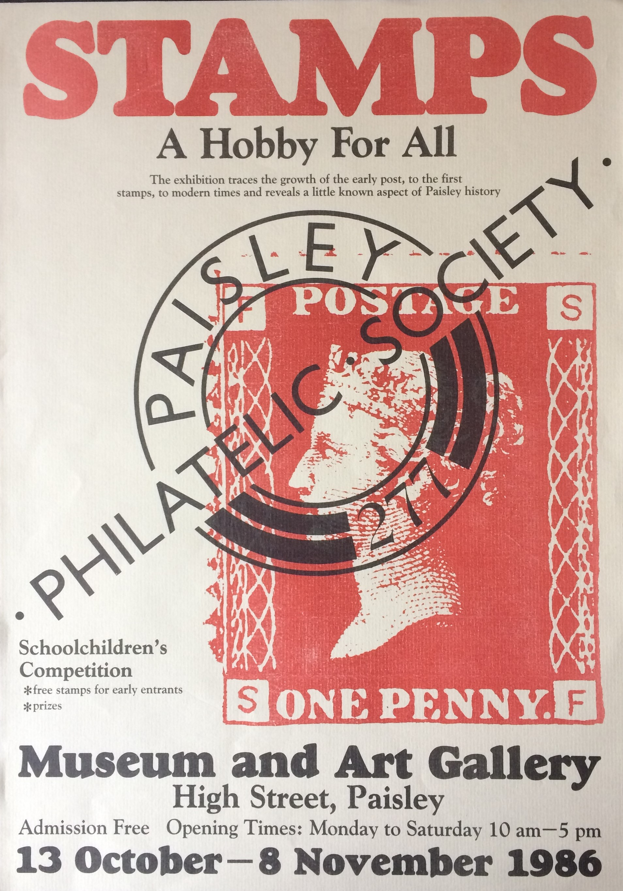
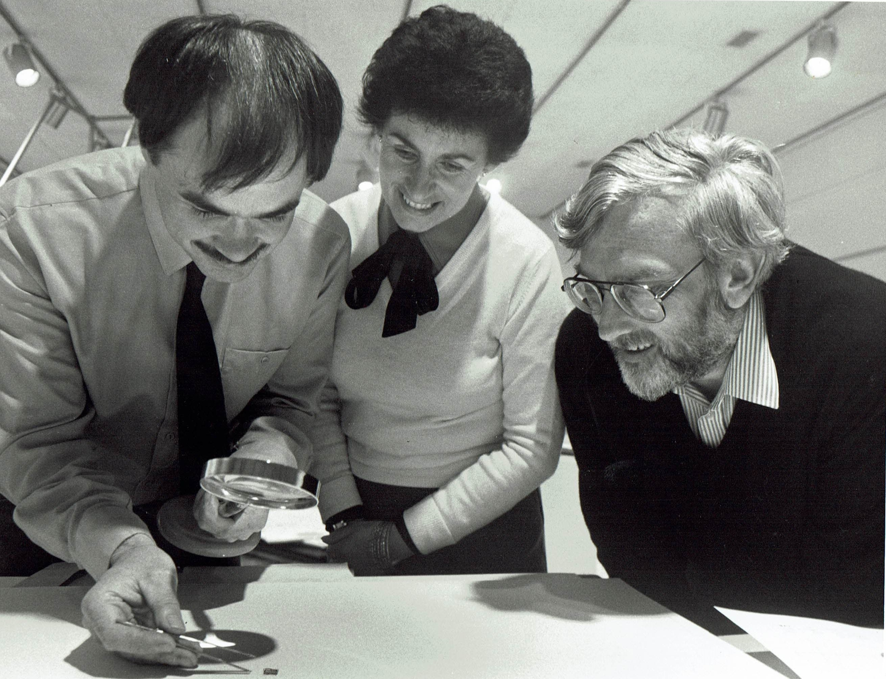

1986 Exhibition in Paisley Museum and Art Gallery
In October and November 1986 Paisley Philatelic Society held an exhibition in Paisley Museum and Art Gallery and a rather attractive poster was designed by the Museum to publicise the exhibition.


David Stalker, Dorothy Anderson and Jim Erskine from Paisley Museum examaining a tiny Germnan stamp.
This exhibition featured as its core a run through of British stamps from the original Penny Black through to current issues. Alec Greer kindly showed his collection of Wallace Papers. Robert Wallace had been the MP for Greenock closely associated with the reform of the postal service, and with the introduction of the penny post. Wallace was chairman of the committee that examined Rowland Hill's penny postage scheme and he was instrumental in the decision to recommend the proposals to Parliament in 1839. Posters and Pamphlets relating to the campaign to introduce Penny Postage were shown.
Stamps and covers from numerous countries were shown together with many other aspects related to the transmittal of mail. Collecting interests of philatelists are many and varied. One stand showed ephemera on Clydebank built ships, postcards were well represented and particular highlights were the number of thematic displays. Different ways of transmitting mail were included and there was even an empty projectile which had contained propaganda leaflets which were launched over Germany in the latter days of World War II. The leaflets and their translation are shown below
Competitions were held for younger visitors with packets of free stamps given out by members.